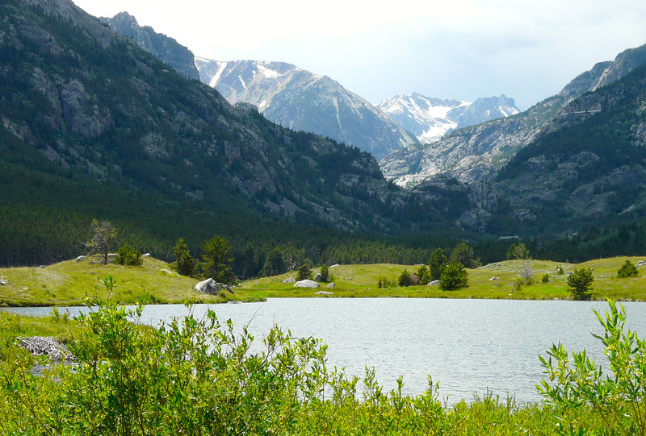
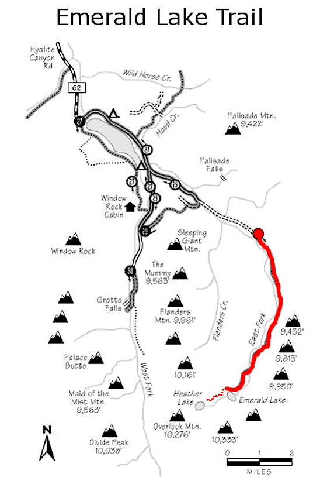
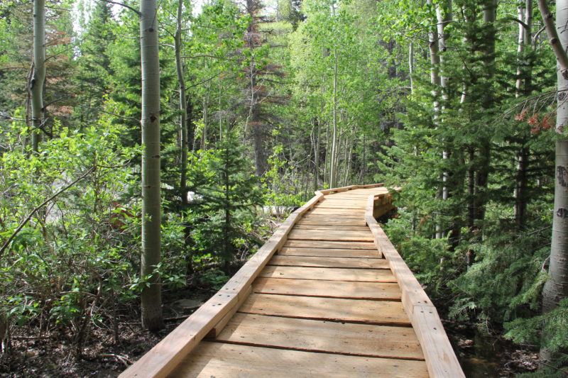

Emerald Lake/Heather Lake
| TOUR DETAILS | |||
|---|---|---|---|
| Trail Location | South of Bozeman down Hyalite Canyon road, about a mile past the waterfall. | ||
| Distance | out and back 9 miles | ||
| Trail Type | 100% single track mountain bike trail. | ||
| Technical Difficulty | Moderate | ||
| Bicycle types | Trike, Recumbent, E-Bike | ||
| Skill Level | advanced skills | ||

Sourdough Creek Nature Trails
Whether you’re in the area or just driving through, Diablo Lake is always a good spot to stop and take in the North Cascades. If you want to extend your stop into a hike, check out the Sourdough Creek Trail. This short and moderate trail traverses through lush, mossy forest and leads you up to the Sourdough Creek waterfalls. With wildlife, mountain and lake views and plenty of rest stops, this trail is perfect for all ages.
The trail connects with the Diablo Lake Trail, so park at the North Cascades Environmental Learning Center.
| TOUR DETAILS | |||
|---|---|---|---|
| Trail Location | Located on the south edge of Bozeman, running south from Kagy Boulevard near the Valley View Gold Club to Goldenstein Road. | ||
| Trail Type | An easy off-road family ride near town along a beautiful stream, with good opportunities to see wildlife, especially birds. | ||
| Distance | 4.3 total miles | ||
| Skill Level | Easy | ||